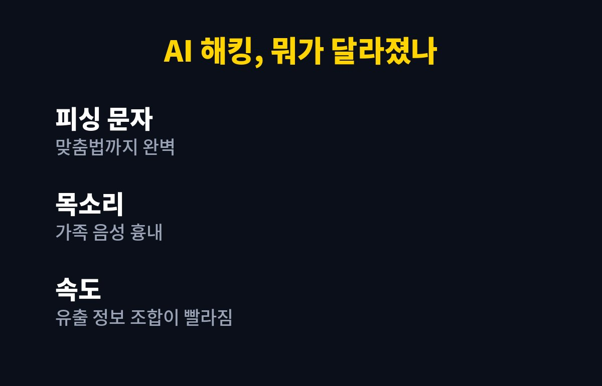
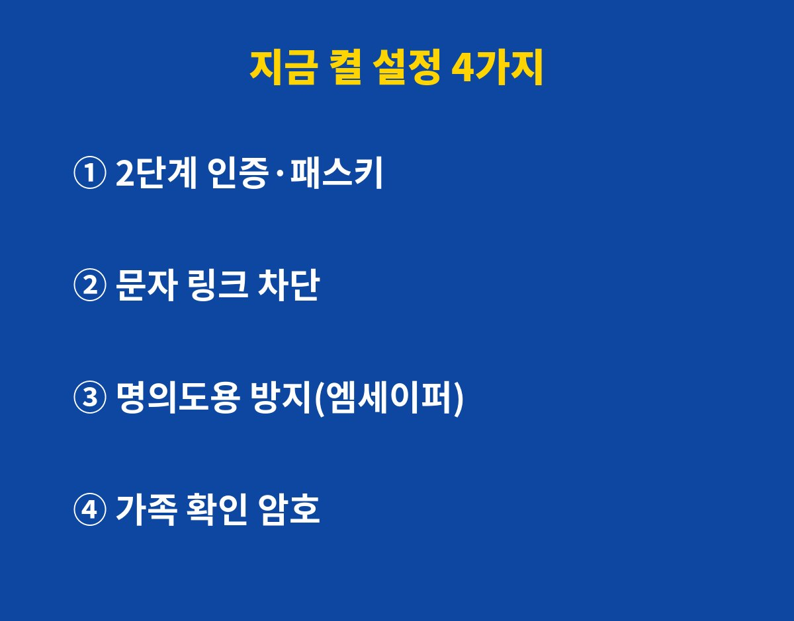

AI 해킹 개인정보 유출, 이제 "나는 괜찮겠지"가 안 통하는 단계로 들어섰어요. 오늘(10월 28일) 금융권 보도에서도 "AI 해킹의 시대, 개인정보가 더 쉽게 빠져나간다"는 경고가 나왔거든요.
스마트폰 하나로 은행·카톡·쇼핑을 다 하는 분이라면, 오늘 딱 4가지 설정만 켜 두세요. 왜 하필 지금이냐고요? 아래에서 바로 풀어 드릴게요.
예전 피싱 문자는 티가 났죠. 어색한 맞춤법, 이상한 링크. 그런데 생성형 AI가 붙으면서 문장이 사람이 쓴 것처럼 매끄러워졌어요. 택배, 카드 결제, 건강보험 환급처럼 "진짜 같은" 문자가 쏟아지는 이유죠.
더 무서운 건 조합이에요. 여기저기서 흘러나온 이름·전화번호·주소 조각을 AI가 빠르게 엮어서, 나만 노린 맞춤형 사기 시나리오를 만듭니다. 쉽게 말해 소매치기가 지갑 대신 내 인생 정보를 줍고 다니는 셈이에요.
목소리도 문제예요. 짧은 음성만 있어도 비슷하게 흉내 내는 기술이 이미 나와 있어서, "엄마 나 폰 고장 났어" 전화가 진짜 자녀 목소리처럼 들릴 수 있거든요.

| 할 일 | 어디서 | 막아 주는 것 |
|---|---|---|
| ① 2단계 인증·패스키 | 구글·네이버·카카오 계정 보안 메뉴 | 비밀번호 털려도 로그인 차단 |
| ② 문자 링크 안 누르기·스팸 차단 | 메시지 앱 설정 > 스팸 차단 | 가짜 사이트·악성 앱 설치 |
| ③ 명의도용 방지 | 엠세이퍼(msafer.or.kr) | 내 이름으로 몰래 폰 개통 |
| ④ 가족 확인 암호 | 가족끼리 미리 정하기 | AI 목소리 사칭 전화 |
2단계 인증은 비밀번호 말고 한 번 더 확인하는 장치예요. 패스키는 아예 비밀번호 대신 지문·얼굴로 로그인하는 방식이고요. 비밀번호가 새도 문이 안 열리니, 가성비 최고의 자물쇠죠.
갤럭시: 설정 → 보안 및 개인정보 보호 → 여기서 출처를 알 수 없는 앱 설치가 꺼져 있는지 먼저 확인하세요. 문자 링크로 앱 까는 걸 막는 첫 관문이거든요.
아이폰: 설정 → 개인정보 보호 및 보안 → 위치·사진·연락처 권한을 앱별로 훑어보세요. 손전등 앱이 연락처를 왜 보나요? 바로 끄면 됩니다.
카카오 계정: 카카오톡 설정 → 카카오계정 → 계정 보안에서 2단계 인증을 켜 두세요. 카톡이 털리면 지인 전체가 피해를 보니까, 여기는 꼭이요.
엠세이퍼: 사이트에서 가입사실 현황조회로 내 명의 회선을 확인하고, 쓰지 않는다면 신규 가입 제한까지 걸어 두면 마음이 편해요.

이상한 결제 문자를 받았거나 링크를 눌렀다면 당황하지 말고 순서대로 하세요. 먼저 비행기 모드로 네트워크를 끊고, 다른 기기에서 주요 계정 비밀번호를 바꿉니다. 금융 피해가 걱정되면 거래 은행 고객센터나 112에 바로 연락해 지급정지를 요청하면 돼요.
그리고 "링크 한 번 눌렀는데 별일 없네?" 하고 넘기지 마세요. 악성 앱은 조용히 숨어 있는 게 특기거든요. 최근 설치된 앱 목록을 꼭 한번 훑어보세요.
AI 해킹 개인정보 공격은 점점 똑똑해지는데, 막는 방법은 의외로 단순해요. 2단계 인증, 링크 안 누르기, 명의도용 방지, 가족 암호. 이 4개만 해도 공격자 입장에선 "이 사람은 귀찮다"가 되거든요. 해커도 결국 쉬운 상대부터 노리니까요.
여러분은 4가지 중 몇 개나 이미 켜 두셨나요? 오늘 밤 자기 전 5분만 투자해 보세요.
폰·앱·보안 소식, 놓치기 싫다면 구독해 두세요. 꼭 알아야 할 것만 빠르게 알려 드릴게요.
기사·공식 발표 기준이며 출시·가격 정보는 바뀔 수 있어요.